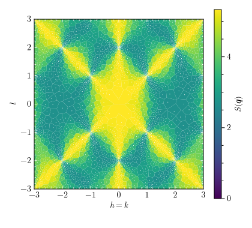
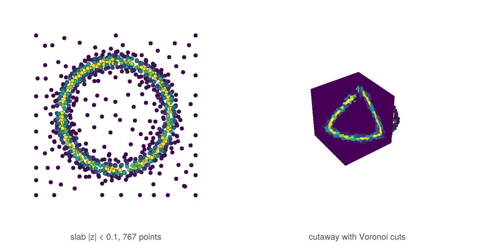

Plotting
AdaptivePort.jl has no plotting code and no Makie dependency: the data accessors give everything a plot needs, and the recipes below use CairoMakie and DelaunayTriangulation.jl. The scripts examples/learner1d_plot.jl, examples/learner2d_rings.jl, examples/learner2d_spinice.jl and examples/learnernd_shell.jl produce the figures of these docs; run them with julia --project=examples. For publication styling follow your own theme; the examples use MakieHelpers.
result(learner), triangles(learner) and to_table(learner) return copies and never change the learner, so you can plot while a runner is working (read from the task that started it, see Runners).
One dimension
result(learner) is (x, y) sorted by x: draw the line through the samples and mark the points to show where the learner sampled.
using AdaptivePort, CairoMakie
learner = Learner1D(x -> tanh(50x); bounds = (-1, 1))
BlockingRunner(learner; max_npoints = 50)
data = result(learner)
fig = Figure(size = (500, 300))
ax = Axis(fig[1, 1]; xlabel = L"x", ylabel = L"f(x)")
lines!(ax, data.x, data.y; color = :black)
scatter!(ax, data.x, data.y; color = :red, markersize = 5)
fig
Two dimensions
result(learner) is (points, values) with points a vector of (x, y) tuples; triangles(learner) is the Delaunay triangulation as index triples into points.
using AdaptivePort, CairoMakie
import DelaunayTriangulation as DT
f(x, y) = exp(-((hypot(x, y) - 0.6) / 0.05)^2)
learner = Learner2D(f; bounds = ((-1, 1), (-1, 1)))
BlockingRunner(learner; max_npoints = 800)
data = result(learner)
xy = Point2f.(data.points)
z = data.values
tris = reduce(vcat, [collect(t)' for t in triangles(learner)]) # n x 3 matrix of indicesSample points on their own, and the triangulation as a wireframe:
fig = Figure(size = (900, 320))
ax1 = Axis(fig[1, 1]; aspect = 1, title = "samples")
scatter!(ax1, xy; color = :black, markersize = 3)
ax2 = Axis(fig[1, 2]; aspect = 1, title = "triangulation")
mesh!(ax2, xy, tris; color = z, colormap = :viridis, shading = NoShading) # filled, linear interpolation
edges = [xy[t[k]] for t in triangles(learner) for k in (1, 2, 2, 3, 3, 1)] # three edges per triangle
linesegments!(ax2, edges; color = (:black, 0.3), linewidth = 0.5)The filled mesh is the piecewise-linear interpolant. For smooth contours, interpolate onto a grid (for example with Interpolations.jl or NaturalNeighbours.jl, which are not dependencies here) and use contourf! or heatmap!; the learner does not provide an interpolator.
Voronoi cells
Colouring each sample's Voronoi cell shows the sampling density directly and needs no interpolation. This is what examples/learner2d_rings.jl does, with the cells clipped to the convex hull:
vorn = DT.voronoi(AdaptivePort.delaunay(data.points); clip = true)
cells = [Point2f.(DT.get_polygon_coordinates(vorn, j)) for j in eachindex(data.points)]
fig = Figure(size = (400, 400))
ax = Axis(fig[1, 1]; aspect = 1)
poly!(ax, cells; color = z, colormap = :viridis)
scatter!(ax, xy; color = :white, markersize = 2)AdaptivePort.delaunay(points) is the triangulation helper the package itself uses (unexported). Pass it points in the order of result(learner).points, so that cell j belongs to sample j.


The second figure shows 2000 samples of the neutron structure factor $S(\mathbf{q})$ of nearest-neighbour classical spin ice in the self-consistent Gaussian approximation ($T = 0.001$ in units of the effective Ising coupling), in the plane $q_x = q_y$ of reciprocal space. The samples concentrate on the pinch points (bow-ties) at the reciprocal-lattice points.
More than two dimensions
For LearnerND, simplices(learner) gives the simplices; examples/learnernd_shell.jl draws a slab of a three-dimensional sampling together with a Voronoi cutaway:
